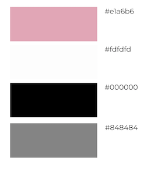
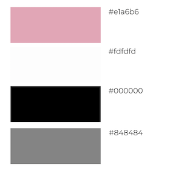

01 initial design concept
Many students use Google Maps to search for study spots only see the location information, but no specific information about the study spots, such as wifi, facilities, etc., so sometimes they walk into a study spot that doesn't meet their needs.
Brisbane Study Spots use a database to assign tags to each study spot, and users can filter out their preferred study spots by selecting their preferred tags to find the most suitable study environment for their needs. Our idea was to use two databases, Queensland Public Library and Restaurants, which provide information on libraries and cafes that can be used for studying. We believe that the target users could benefit a lot from this web application. We want our users to have a pleasant experience when using this application.
 
